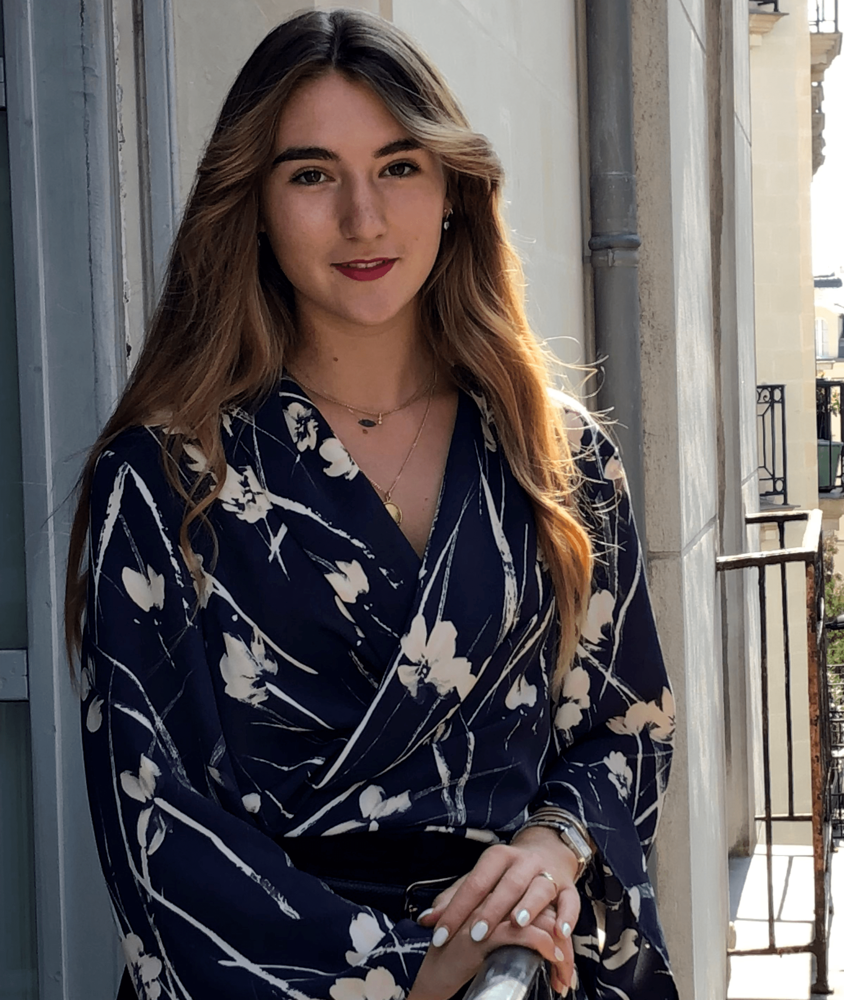

Welcome to my world!☀ï¸
Hi! I am Nathalia, a 19 years old girl, passionate of living. I love discovering new things, new places and new people. I am currently completing a Bachelor in Management, at Audencia Business School, which allowed me to have amazing experiences around the world. Thanks to this digital seminar, I have the possibility to extend my knowledge and setting up a page about... ME!
If you want to learn more about my school and my studies, it is over here👇
Some information about my degreeMulticultural living🌍
I had the chance to live 15 years in Greece, where I was born. I have a double nationallity Greek and French thanks to my parents. I was in an international school, enabling me to meet various nationalities through my school years. Greece is the place where I feel like home, the place where I would like to go once I feel that it is time to settle down.

Future plans🔍
I love studying, and learning, this is why I am planning to continue my studies. I would like to go abroad to study international logistics and shipping. Before that, I am going to take a year, to go back to Greece, see my family and work in the field I would like to pursue my studies in. I am also thinking of travelling around the world (when the sanitary conditions will enable that), in order to discover more! New people, new cultures, new tastes and new places. Life must be tasteful and colorful!
Sports passionate🏉
I always did sports : I started with gymnastics, played volley-ball, tennis, did swimming and karate, but my two biggest passions are rugby and horse-ridding. Totally different, yet absolutly amazing.